- 12,684
- photographs released on Wikimedia Commons
- 847
- of them illustrating 1,496 articles
- 154
- Wikimedia sites, including 118 Wikipedias
- 22
- books and journals that credit my work
The collection
A random mix from all 12,684 photographs, 847 of them used on Wikipedia. Pick a region or subject, switch to most viewed, or shuffle again.


Where my photographs are seen
Estimated readers of Wikipedia articles that use my photographs, by country, over the last 12 months. Countries are shaded by readers, from deep blue to bright mint. Drag to spin; hover for figures.
Top countries
- United States28.0%18.1M
- Germany10.1%6.5M
- France8.6%5.5M
- United Kingdom6.9%4.4M
- India4.9%3.1M
- Canada3.4%2.2M
- Spain3.1%2.0M
- Italy3.1%2.0M
- Poland2.1%1.4M
- Japan1.9%1.2M
205 countries in total. Estimate: each article's views are split by its Wikipedia edition's reader mix by country (Wikimedia Analytics). Wikimedia does not publish country data per article or per file.
In print
Books and journals that reproduce my photographs with credit, each checked against the published text.
- John Wiley & Sons Buildings for People: Responsible Real Estate Development and Planning Justin B. Hollander, Nicole E. Stephens, 2023, p.130, Fig. 7.2 Colosseum amphitheater, Rome
- John Wiley & Sons A History of Modern Germany: 1800 to the Present Martin Kitchen, Lauren Faulkner Rossi, 2023, p.383, Fig. 17.2 Memorial to the Murdered Jews of Europe, Berlin
- Springer Nature The True Story of Modern Cosmology Emilio Elizalde, 2021, pp.94-95, Fig. 4.14 ETH Zurich - Albert Einstein's locker
- World Scientific Brave New e-World, Volume 1 Michael Gurvitch, 2022, p.4 Chevrolet Corvette
- Bellwether Media Koenigsegg Regera Kaitlyn Duling, 2023, p.13 Koenigsegg Regera
- CRC Press Destination Marketing: Creating Memorable Tourism Experiences Rupa Rathee, Pallavi Rajain, 2022, p.2-14
- Hachette Limca Book of Records 2025 Hachette India, 2025 HAL Ajeet at HAL Museum, Bengaluru
- Hachette Limca Book of Records 2026 Hachette India, 2026, PT1267 HAL Ajeet at HAL Museum, Bengaluru
- Pan Macmillan The Shortest History of Football Brian D. Bunk, 2026, photo credits
- Edigita Lionel Messi: Il miglior calciatore del mondo Eduardo Acín dal Maschio, 2025, credits page
- BizBooks Můj rok 1983 Jarmila Frejlichová, 2023, p.207 Jules Rimet Trophy
- IESDE Brasil Imagem e Cultura Visual Rafael Araldi Vaz, p.123 007 film posters
- Self-published The Galácticos Dave De Jesus, 2026, p.26
- 技術コモン History of Positioning Technology (English) p.238 (Ank Kumar, INFOSYS Limited) series
- 技術コモン 測位技術史 ― 空間を読む技術・位置を定める社会 p.221 (Ank Kumar, INFOSYS Limited) series
- 技術コモン 市場法制史 ― 市場と制度の共進化 p.206 (Ank Kumar) 03
- Pressbooks OER Introduction to Public Speaking (open textbook) Ch. 12, Fig. 12.3 Harry Potter's Cupboard under the Stairs
- Self-published Miklós Horthy: The Hungarian Anti-Hero Liam Athas, 2023, p.230
- Cambridge University Press Charismatic Nations: A Cultural History of Nationalism in Europe from 1800 to the Present Joep Leerssen, 2026, Ch. 1 'Memory and Power', Fig. 1.4, pp.25-64 Monument of the Republic, Gezi Square, Istanbul (Atatürk)
- American Mathematical Society Spectrum vol. 106 (endmatter credits) Figure 3.5.2 Sagrada Família Schools classroom (Gaudí), Barcelona
- GESIS - Historical Social Research The Space of the Bazār (Historical Social Research 51/1) Chaudhuri, 2026, Figure 3 Entrance to Grand Bazaar, Istanbul
- Academic Conferences and Publishing Limited ECCWS 2023: 22nd European Conference on Cyber Warfare and Security Antonios Andreatos, Christos Douligeris (eds.), 2023, p.502 United Nations Building, Geneva
On the web
612 pages on 390 websites use my photographs, including:
- Smithsonian Magazine
- Rolling Stone UK
- San Francisco Examiner
- ETH Zurich
- Dezeen
- Domus
- Archinect
- Simple Flying
- MiGFlug
- Samford University
- America Magazine
- EWTN News
- National Catholic Reporter
- Risk.net
- Economics Observatory
- AllAfrica
- Tripadvisor
- GetYourGuide
- Klook
- Celebrity Cruises
- Travel + Leisure Asia
- Kiddle encyclopedia
- Structurae
- The Brussels Times
- Medium
All 612 pages on 390 websites
 247wallst.com
247wallst.com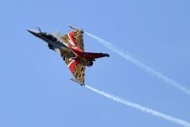
247wallst.com 247wallst.com
247wallst.com 247wallst.com
247wallst.com 247wallst.com
247wallst.com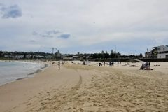
670kltt.com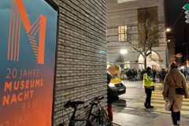
acarta.app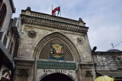
accessistanbul.com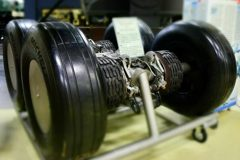
aerocorner.com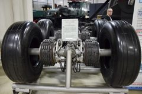
aeroland.pl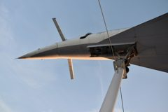
aerospaceglobalnews.com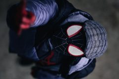
affairesdegars.com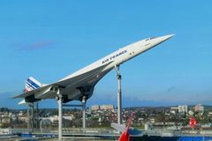
afisha.london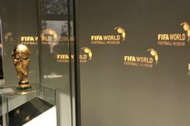
aimusicpreneur.com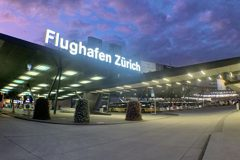
airportir.com- aisencorporation.com
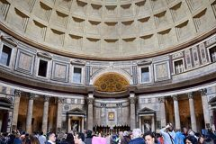
alivetherapies.com.au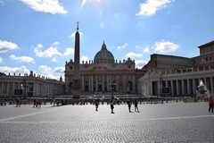
americamagazine.org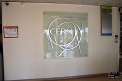
archive.org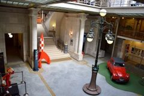
aroundus.com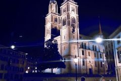
aroundus.com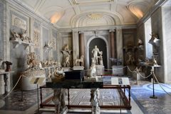
articlebay.medium.com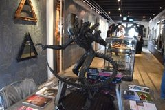
artincontext.org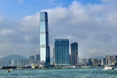
artincontext.org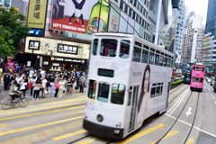
asiaundiscovered.com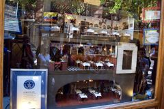
askthecity.com- assemblyresearchmatters.org
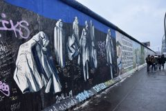
atplace.app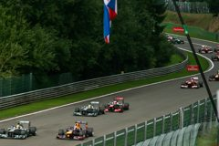
autogathering.com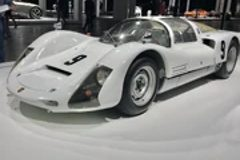
automobile.fandom.com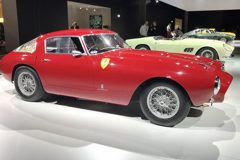
automobilownia.pl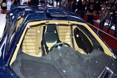
automobilownia.pl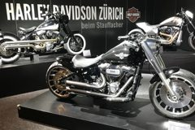
autos.yahoo.com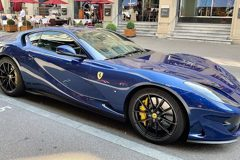
autos.yahoo.com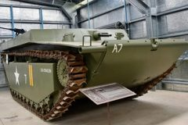
autos.yahoo.com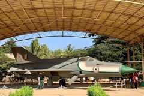
aviationa2z.com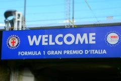
backfirenews.com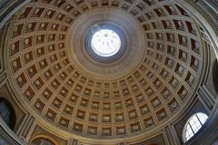
baffledtimetravel.com- balingen.de
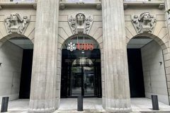
baltimorejewishlife.com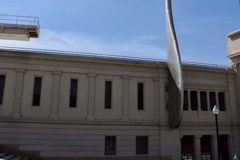
barcelona.com- barchetta.co
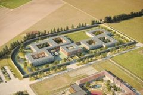
batimag.ch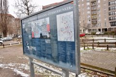
battleofberlin.com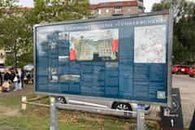
battleofberlin.com- becoartes.com
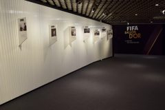
becoartes.com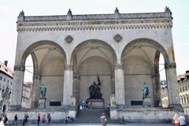
berlin-kombinat.com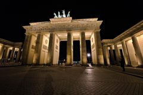
berlinguiden.net berlinwallmap.info
berlinwallmap.info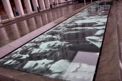
berlinwallmap.info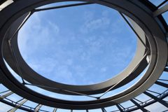
berlinww2tours.com- bestunis.com
- bisnow.com
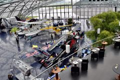
blog.booksi.com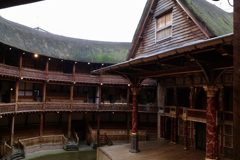
blog.idaoffice.org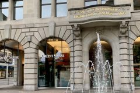
blog.idaoffice.org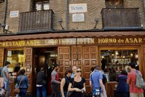
blog.idaoffice.org bodybuildingstats.com
bodybuildingstats.com- bodybuildingstats.com
- bodybuildingstats.com
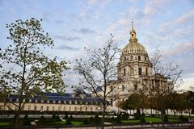
bonjourparis.com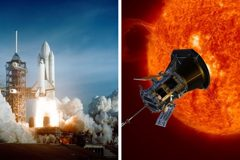
boredpanda.com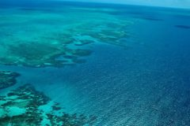
boredpanda.com- bradycarlson.com
- brewminate.com
- bworldonline.com
- byfoodandtravel.com
- carbrandlogos.com
- carnewscafe.com
- carontologia.com
- carontologia.com
- cascade.app
- cathnewsnz.com
- cathnewsnz.com
 cathnewsnz.com
cathnewsnz.com- celebritycruises.com
 charactorium.com
charactorium.com- charactorium.com
 charactorium.com
charactorium.com- chattanoogasoccerfans.com
- ciceru.com
- cityviking.com
- colosseumticketsguide.com
- combatantisemitism.org
- confinity.com
- correiobraziliense.com.br
- crystalclearnews.com
- cultoura.org
- culturalheritageonline.com
- culturalpropertynews.org
- currentzeitgeist.com
- cxnetwork.com.au
- cyclowiki.org
 daftarsekolah.spmb.teknokrat.ac.id
daftarsekolah.spmb.teknokrat.ac.id- daftarsekolah.spmb.teknokrat.ac.id
- deeparrival.com
- dezeen.com
- directbooking.ro
- directbooking.ro
- discoursemagazine.com
- discoverwalks.com
- discoverwalks.com
- discoverwalks.com
- discoverwalks.com
- discoverwalks.com
- discoverwalks.com
- discoverwalks.com
- discoverwalks.com
- discoverwalks.com
- discoverwalks.com
- discoverwalks.com
- discoverwalks.com
- discoverwalks.com
- discoverwalks.com
- discoverwalks.com
- discoverwalks.com
- discoverwalks.com
- discoverwalks.com
- diy.org
- diy.org
- diy.org
- diy.org
- domusweb.it
- dragondenproductions.com
- drempelvrij.be
- drivemebarcelona.com
- driversdaily.com
- driversdaily.com
- driversdaily.com
- dshprotect.de
- dwds.de
- earlyrecognitioniscritical.org
- economicsobservatory.com
- en.liputan6.com
- energyenhancement.org
- ethz.ch
- eurojournalist.eu
- euroviajar.com
- evenitto.com
- ewtnnews.com
- factinate.com
- factinate.com
- factinate.com
- falandodeformula.com.br
- fatbirder.com
- felsenmeer-odenwald.de
- flickr.com
- flickr.com
- fmindustry.com
- focusonbelgium.be
- fondspascaldecroos.org
- fondspascaldecroos.org
- fondtravels.com
- footbadle.com
- footballalarm.com
- footballalarm.com
- footballalarm.com
- footballmakeshistory.eu
- formula12017.wordpress.com
- friendsofliverpool.com
- frontaliereticino.ch
- frontaliereticino.ch
- frontaliereticino.ch
- frontaliereticino.ch
- fulhamsupporterstrust.com
- fussymama.sg
- futbolfolklore.com
- garagegalleyhangar.com
- geopop.it
- germanhistoricalmuseum.ai.studio
- getyourguide.com
- getyourguide.com
- golwg.360.cymru
- goplaces.fyi
- gp-viewer.com
- gp-viewer.com
- gridrift.pt
- griffithreview.com
- groundhopperguides.com
- gruene-duebi.ch
 gruene-duebi.ch
gruene-duebi.ch- gruene-duebi.ch
 gruene-duebi.ch
gruene-duebi.ch- guidese.com
- gym-training.com
- happyhourracing.com
- happylongway.com
- haringeycommunitypress.co.uk
- heather-king.com
- heuteaufdeutsch.de
- historicmysteries.com
- historysnob.com
- historysnob.com
- historysnob.com
- hitpoints.news
- hometruth.com.au
- hounslowherald.com
- hpcvlautochevoglio.blog
- hypertext.niskanencenter.org
- ibb.co
- imagininghistory.co.uk
- img1.wsimg.com
 inautonews.com
inautonews.com- inautonews.com
- inside-it.ch
- interaksyon.philstar.com
- interestingfootball.com (archived)
- inyourpocket.com
- itinara.ai
- jorritbosch.de
- journal.mtu.edu.iq
- journeyfinder.net
- jurist.org
- kids.kiddle.co
- kids.kiddle.co
- kids.kiddle.co
- kids.kiddle.co
- kids.kiddle.co
- kids.kiddle.co
- kids.kiddle.co
- kids.kiddle.co
- kids.kiddle.co
- kids.kiddle.co
- kids.kiddle.co
- kids.kiddle.co
- knowledge.energyinst.org
- kozmozracing.com
- kozmozracing.com
- lamaletainquieta.com
- langenberg.arch.ethz.ch
- lastwordonsports.com
- layover-hub.com
- linkedin.com
 linkedin.com
linkedin.com- linkedin.com
- livetraveller.in
- locovox.net
- locovox.net
- loe.org
- loroplanner.com
- loudavymkrokem.cz
- loudavymkrokem.cz
- loudavymkrokem.cz
- loudavymkrokem.cz
- loudavymkrokem.cz
 mancunion.com
mancunion.com- mancunion.com
- mancunion.com
- maploco.com
- maploco.com
- maploco.com
- maploco.com
- maploco.com
- matchonway.com
- materialebellico.ch
- materieldeguerre.ch
- medium.com
- metablox.co
 migflug.com
migflug.com- migflug.com
- migflug.com
- migflug.com
- migflug.com
- military-history.fandom.com
- millenaire3.grandlyon.com
- mini-adventures.com
- mobilityblog.ch
- modifitainer.ist
- moneycontrol.com
- moneycontrol.com
- more-cars.net
- motor-junkie.com
- motor-junkie.com
- motorsearches.com
- motorsearches.com
- motorsearches.com
- motorsearches.com
 motorsearches.com
motorsearches.com- motorsearches.com
- my-roadster.com
- my.biennale.com
- mycityhunt.com
- mydatavalue.com
- myswitzerland.com.hk
- ncronline.org
- nestfainder.ai
- newsbreak.com
- newsbreak.com
- newsgram.com
- ninos.kiddle.co
- nodum.lt
- northwestbylines.co.uk
- nsctotal.com.br
- oberbaumbruecke.de
- old.railwayadventures.travel
- olympics.fandom.com
- operationsports.com
- ourwabisabilife.com
- outlooktraveller.com
- overton-magazin.de
- owim.uek.krakow.pl
- ozholiday.com.au
- ozu.com
- pack-lightly.com
- paddock-gp.com
- petpethk.com
- piershare.com
- planersocietaet.de
- plantenium.com
- plantenium.com
- podcasts.apple.com
- popular-archaeology.com
 popular-archaeology.com
popular-archaeology.com- probuscbp.org
- projectapex.eu
- promi-geburtstage.de
- promi-geburtstage.de
- quora.com
 quora.com
quora.com quora.com
quora.com- racingcarnetwork.com
- racingcarnetwork.com
- randallwhite.substack.com
- rauantiques.com
- rawhemp.eu
- realtravelerexperiences.com
- realtravelerexperiences.com
- realtravelerexperiences.com
- realtravelerexperiences.com
- realtravelerexperiences.com
- rebelatlas.com
- rebelatlas.com
- redlinecodex.com
- redlinecodex.com
- reisdoorengeland.nl
- religionmediacentre.org.uk
- renaulteurodrive.com
- reportersonline.nl
- revue-projet.com
- ringoesim.com
- risk.net
- rizz.kz
- roarnews.co.uk
- rollingstone.co.uk
- rondinello.com
- roughmaps.com
- roughmaps.com
- roughmaps.com
- roughmaps.com
- roundtripski.vercel.app
- royalairforcemuseumlondon.ai.studio
- runabc.co.uk
- rushexperts.com
- rushexperts.com
- samford.edu
- scheerpost.com
- scienceabc.com
- scienceandculture.com
- seatshift.com
- seethis.place
- sematours.az
- serakai.studio
- simpleflying.com
- simpleflying.com
- simpleflying.com
- simpleflying.com
- skip-the-line.com
- slashgear.com
- smithsonianmag.com
- sourcelibrary.org
- southaustraliantrails.com
- spc.int
- spc.int
- spc.int
- speedmachinedreams.com.br
- sportsmatik.com
- sportsmatik.com
- stadion.de
- stadiumtalk.com
- standpunkt.press
- staybycity.com
- stpetersbasilicatickets.ai.studio
- structurae.net
- structurae.net
- structurae.net
- swisscitybreaks.co.uk
- swisscitybreaks.co.uk
- swissdayout.techil.la
- swissfinancemarket.ch
- sydney.cm
- teggelaar.com
- the-disabled-traveler.com
- the-microbiologist.com
- theboar.org
- thecatrave.com
- thedj-diaries.com
- theimaginativeconservative.org
- theimaginativeconservative.org
- theleftberlin.com
- theloopzurich.ch
- themeparktickets.eu
- themysteriousworld.com
- theprimary.com
- thereflector.ca
- thereviewstories.com
- thesavvygamer.com
- tom-schreiber.berlin
- top10zurich.com
- top7.hr
- topspeed.com
- touriststate.com
- traintomountain.com
- transfair.ch
- travelandleisureasia.com
- travelandleisureasia.com
- travelcurrencyguide.com
- traveldojo.com
- trip101.com
- trip101.com
- trip101.com
- tripbase.com
- tripbase.com
 tripbase.com
tripbase.com- tripdistill.com
- tripdistill.com
- tubes.media
- tumblr.com
- tvsimbrasil.com.br
- unstoppablestaceytravel.com
- upinthesky.nl
- urbansplatter.com
- urbansplatter.com
- viatravelers.com
- vocemundi.com
- vpod.ch
- wasmachma.at
- wealthydriver.com
- wealthydriver.com
- wealthydriver.com
- wealthydriver.com
- wealthydriver.com
- wealthydriver.com
- wealthydriver.com
- wealthydriver.com
 wealthydriver.com
wealthydriver.com- weather.org.il
- weekendwanders.com.au
- welterbe-salzkammergut.at
- weltur.com
- weltur.com
- whowhatwhy.org
- wikikids.nl
- wildlifesydneyzoo.ai.studio
 worldofcars.net
worldofcars.net- worldvirtualtours.online
- worldwidemagazine.org
- wrooom.tumblr.com
- youtube.com
- youtube.com
- youtube.com
- youtube.com
- youtube.com
- youtube.com
- youtube.com
- youtube.com
- youtube.com
- youtube.com
- youtube.com
- youtube.com
 youtube.com
youtube.com- youtube.com
- youtube.com
- youtube.com
- youtube.com
- youtube.com
- youtube.com
- youtube.com
- youtube.com
- youtube.com
- youtube.com
- youtube.com
- youtube.com
- youtube.com
- youtube.com
- youtube.com
- youtube.com
- youtube.com
- youtube.com
- youtube.com
- youtube.com
- youtube.com
- youtube.com
- youtube.com
- youtube.com
- youtube.com
- youtube.com
- youtube.com
- youtube.com
- youtube.com
- youtube.com
- youtube.com
- youtube.com
- youtube.com
- youtube.com
- youtube.com
- ywamcity.org
- zenithconciergerie.com
alcantaradealbuquerque.adv.br
allafrica.com
anconav.ro
archinect.com
archinform.net
archive.org
auralcontrol.com
banking-gateway.com
blackwheel.co
braveneweurope.com
brusselstimes.com
carandclassic.com
carwiki.de
cityseeker.com
coliseum-online.com
coopfederici.org
corner.inc
dacemotorgroup.co.uk
dayfari.com
dcl.bas.bg
denik.cz
deu.archinform.net
eightieskids.com
enotraspalabras.es
entradasestudiosharrypotter.com
europeanconservative.com
euroskulpa.de
eventseeker.com
fabi.berlin
famkecaelan.blogspot.com
fity.club
gpweekender.com
gruenberg-partner.ch
gymbeam.com
historysmysteries314.com
ifadishop.gr
igamingbusiness.com
immobilienbusiness.ch
irris.eu
italien.news
japanconcerttickets.com
justapedia.org
kids.kiddle.co
klook.com
kunstplaza.de
linkedin.com
lowcostwings.com
mail.energ.ie
mathematicshub.edu.au
moovitapp.com
nadelmaniacs.de
navicup.com
nomadotravel.app
ouest-france.fr
outdooractive.com
packlightly.fr
peutop.contvodepa.blog
reddit.com
rochelleisha.blogspot.com
ru.milazzo.life
ru.ruwiki.ru
scp-wiki.wikidot.com
sfexaminer.com
tarmacs.app
tip-berlin.de
travalivetours.com
travelbook.de
tripadvisor.com
tripadvisor.in
tumblr.com
tumgik.com
wikihandbk.com
wikitanks.com
wsbi-esbg.org
youtube.com
zhuanlan.zhihu.com